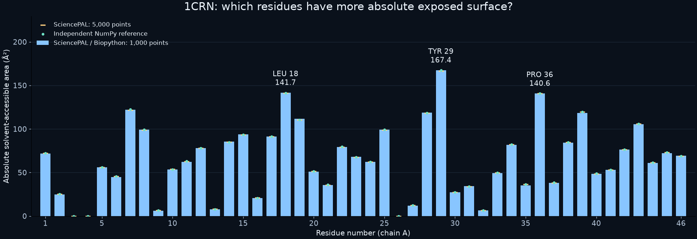

一位队长 · 多位成员 · 各用自己的 Agent
先看协作怎样卡住，
再看我们怎样把研究接起来。
从“蛋白哪些部位暴露在水中”开始，走过提案对齐、队长发布、SciencePAL 科研计算、评审返工和获批文件交接。
当前提交功能基线：ca1b2b5。本视频讲解基础流程，保留明确标注的操作演练与早期真实证据；最新单机三成员验收请看13 阶段原拓扑回放。两者不是同一轮运行，均不代表真人跨账号测试。
我们新增的价值是什么？
原 Vibe-Git 已有成员拓扑、提案和队长对齐。本次扩展把不同平台的 Agent 接进同一科研项目，冻结输入与方法，执行数值检查，并让成果带着独立评审依据交给下一位成员。
SciencePAL：本例由官方 Biology Agent 在云端执行 Python / Biopython，产出代码、参数与测量结果。Codex：用独立实现复算并分析。Vibe-Git Research：管理共同协议、权限、返工与文件交接；不宣称这些算法只能由 SciencePAL 执行。
直接跳到你想看的部分
这项研究得到了什么？
固定 1CRN 结构中，TYR 29、LEU 18、PRO 36 的绝对溶剂可及面积最高。图中同时显示 SciencePAL 的两档采样与独立 NumPy 参考；这是几何描述，不代表生物功能排名。

看完后，可以继续核查
视频中的内容分为两部分。开头的版本困惑是团队情境示意；三成员界面使用真实应用和明确标注的合成执行器演示操作，不代表三个真实账号联调。数值计算与批准依据缺失的证据来自已有的真实 Codex × SciencePAL 运行。新增数值门禁是本地可执行检查：真实保存结果通过，三个受控错误样本被拒绝；不是新发起的远端实验。平台不限于 1CRN。英文为 AI 合成配音，中文字幕已直接显示在画面中；播放器可额外打开英文字幕。